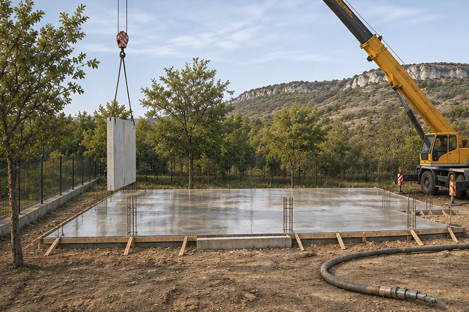
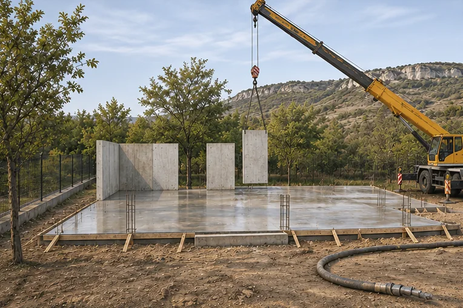
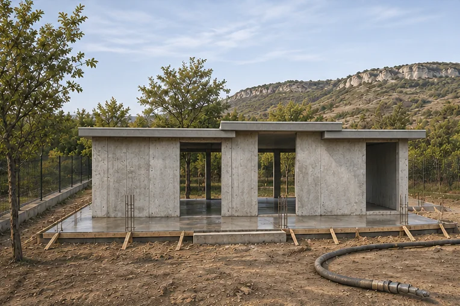

01 / 08 · Эскиз
Сначала — замысел
Увязываем планировку, посадку дома и вид из окон.
Дома из заводских панелей
Сравните проекты, проверьте участок и выберите, в какой комплектации строить.

Дом 89 · от эскиза до фасада
Листайте, чтобы пройти путь от чертежа до готового фасада. При прокрутке вверх история идёт обратно.






01 / 08 · Эскиз
Увязываем планировку, посадку дома и вид из окон.
02 / 08 · Основание
Готовим основание и заливаем бетон.
03 / 08 · Первая панель
Кран подаёт первый стеновой элемент на свободное основание.
04 / 08 · Стены
Соседние панели встают по очереди. Под окна и двери остаются проёмы.
05 / 08 · Первая плита покрытия
Первая плита опускается на подготовленные опоры. Остальная часть дома ещё открыта.
06 / 08 · Собранная коробка
Плиты покрытия установлены. Оконные и дверные проёмы пока открыты.
07 / 08 · Окна
Окна и вход уже на месте. Наружная отделка ещё впереди.
08 / 08 · Фасад
Три спальни и 80,1 м² внутри. Посмотрите план или подберите комплектацию для своего участка.
Эскиз и стадии монтажа — художественная визуализация. Финальный фасад — изображение из коммерческого предложения.
Каталог
Прямая геометрия Open Life, мягкие формы Soft и арочные фасады Resort.
Расскажите о планах и участке. Покажем варианты, с которых можно начать.
Подобрать дом